Tema 7: Memòria cau
7.1 La jerarquia de memòria
7.1.1 Tecnologies de memòria
Tot computador necessita emmagatzemar les instruccions i les dades dels programes que executa. Aquesta funció la cobreixen diverses tecnologies, cadascuna amb característiques pròpies de velocitat, capacitat i cost:
- La memòria secundària (discs durs magnètics o memòries SSD, d’estat sòlid) és la memòria persistent: conserva les dades quan el computador s’apaga. Té un cost per bit molt baix i una capacitat molt gran, però un temps d’accés extremadament lent: típicament més de 5 ms en un disc dur i entre 0,05 i 0,1 ms en un SSD. Per a un període de rellotge de CPU típic de 0,25 ns, un accés a SSD tardaria centenars de milers de cicles; un accés a disc dur, desenes de milions.
- La memòria principal o RAM (random access memory) és de tipus volàtil: perd el contingut quan s’apaga el computador. Quan s’executa un programa, les seves instruccions i dades es carreguen des de la memòria secundària a la memòria principal, on resideixen durant l’execució. La RAM té un temps d’accés molt més curt que la memòria secundària (entre 50 i 100 ns), però el seu cost per bit és considerablement més alt.
La RAM es pot implementar com a memòria estàtica (SRAM) o dinàmica (DRAM). Cada bit de SRAM requereix almenys sis transistors, mentre que un bit de DRAM n’ocupa un de sol més un condensador. Això fa que la DRAM tingui molta més capacitat per unitat de superfície i un cost per bit molt menor, i per aquest motiu s’usa habitualment per a la memòria principal. La SRAM, en canvi, és molt més ràpida i s’usa en contextos on la velocitat és prioritària, com ara les memòries cau.
| Tecnologia | Capacitat típica | Temps d’accés | Cost per GB |
|---|---|---|---|
| Registres (SRAM) | ~1 KiB | ~0,25 ns | — |
| Memòria cau (SRAM) | 32 KiB – 64 MiB | 0,5 – 5 ns | ~3.000 $/GB |
| Mem. principal (DRAM) | 8 – 128 GiB | 50 – 100 ns | ~3 $/GB |
| Mem. secundària (SSD) | 256 GB – 8 TB | 0,05 – 0,1 ms | ~0,08–0,15 $/GB |
| Mem. secundària (disc) | 1 – 20 TB | 5 – 10 ms | ~0,02 $/GB |
7.1.2 El problema de la diferència (gap) entre processador i memòria
Al llarg dels anys, el rendiment dels processadors ha crescut molt més ràpidament que la velocitat de la memòria principal. La Figura 7.1 il·lustra aquesta divergència entre 1980 i 2010: mentre el rendiment dels processadors creixia a un ritme d’entre el 35% i el 55% anual, la latència de la DRAM millorava menys d’un 7% anual. El resultat és que el temps d’accés a la memòria principal pot arribar a ser de 200 a 400 cicles de CPU, és a dir, centenars de vegades superior al temps que tarda la resta d’operacions d’una instrucció (descodificació, lectura de registres, ALU, etc.). Aquesta diferència s’anomena gap entre processador i memòria.
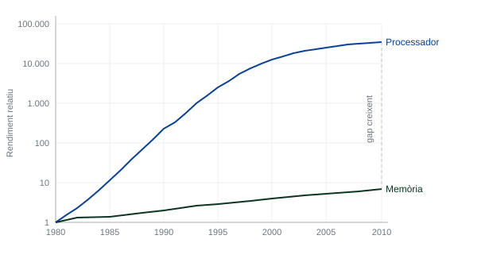
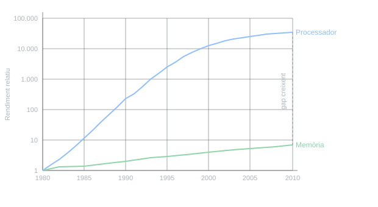
Per veure l’impacte d’aquest gap en el rendiment, apliquem la llei d’Amdahl (Secció 6.2). Si \(t_{acc}\) és el temps d’accés a la memòria principal i \(t_{proc}\) el temps de la resta d’operacions d’una instrucció, el CPI és proporcional a \(t_{proc} + t_{acc}\). Suposant \(t_{acc} = 200 \cdot t_{proc}\), la fracció del temps d’execució que correspon al processament de la instrucció (sense l’accés a memòria) és:
\[P_x = \frac{t_{proc}}{t_{proc} + t_{acc}} \approx 0{,}005\]
Per la llei d’Amdahl, el màxim guany que es pot obtenir millorant únicament el processador (sense tocar la memòria) és:
\[s_{max} = \frac{1}{1 - P_x} \approx 1{,}005\]
És a dir, menys d’un 1%. Millorar el processador sense atacar el problema de la memòria és pràcticament inútil.
7.1.2.1 El punt d’inflexió: la fi de l’escalat de Dennard
Cap al 2003–2005, la indústria va topar amb un límit físic fonamental: el límit tèrmic. Fins aleshores, reduir la mida dels transistors permetia augmentar la freqüència de rellotge mantenint la mateixa densitat de potència (un principi conegut com a Escalat de Dennard, Aprofundiment 6.1). Quan aquest escalat va deixar de funcionar, augmentar la freqüència va implicar disparar el consum i la calor generada fins a nivells inassumibles. Des d’aleshores, la freqüència sostinguda dels processadors s’ha estancat entre els 3 i els 5 GHz, amb pics puntuals de fins a 6 GHz en mode turbo.
La indústria va respondre amb dues estratègies complementàries:
- Els processadors multinucli (multicore): en lloc d’un sol nucli molt ràpid, es van integrar dos, quatre, vuit o més nuclis en un mateix xip. Això va permetre continuar aprofitant els transistors addicionals que oferia cada nova generació tecnològica per augmentar el rendiment en paral·lel, però sense millorar el rendiment d’un sol fil d’execució (single-thread), que és el que determina el gap amb la memòria. Des de 2010, el creixement del rendiment single-thread ha caigut a un modest 5–10% anual, molt per sota del ritme anterior.
- La reducció del consum energètic. La generalització dels dispositius mòbils —telèfons intel·ligents, tauletes, portàtils ultraprims— va convertir l’eficiència energètica en una prioritat de primer ordre: no es tracta només d’impacte ambiental, sinó de l’autonomia de la bateria i de la possibilitat de dissenyar dispositius sense ventilador. Avui dia, l’arquitectura de qualsevol processador modern es dissenya tant per al rendiment com per al consum per instrucció.
7.1.2.2 El gap avui
Malgrat tot, el gap entre processador i memòria no ha desaparegut: la latència de la DRAM segueix sent de l’ordre de centenars de cicles, i la DRAM tampoc ha resolt el problema de fons (continua optimitzant capacitat per davant de velocitat). El creixement dels processadors multinucli augmenta, a més, la pressió sobre la memòria: diversos nuclis competeixen simultàniament pels mateixos recursos de memòria, de manera que l’amplada de banda disponible per nucli es redueix. En aquest context, les memòries cau continuen sent tan imprescindibles com sempre, i les jerarquies s’han fet cada cop més profundes i complexes per absorbir aquesta pressió creixent (vegeu la Secció 7.9).
Si teniu una targeta gràfica per a jocs —o heu llegit sobre els acceleradors que entrenen models d’intel·ligència artificial com els que hi ha darrere de ChatGPT— potser us heu preguntat com funciona la seva memòria. La resposta és fascinant, i il·lustra fins on arriba el gap quan s’escalen les demandes.
Una GPU moderna per a jocs (per exemple, una NVIDIA RTX 4090) integra milers de nuclis de càlcul dissenyats per executar moltíssimes operacions en paral·lel. Per alimentar tots aquests nuclis, necessita una amplada de banda de memòria enorme: mentre que un processador convencional accedeix a la DRAM amb una amplada de banda de l’ordre de desenes de GB/s, una GPU d’alt rendiment en necessita centenars. Per aconseguir-ho s’usa memòria GDDR6 o GDDR6X o, en els acceleradors d’IA professionals, HBM (High Bandwidth Memory), una tecnologia que apila múltiples capes de DRAM directament sobre el xip i les interconnecta amb milers de fils paral·lels.
La latència, però, segueix sent el problema de sempre: la GDDR6 i l’HBM augmenten enormement l’amplada de banda gràcies a la proximitat física i als busos amples, però la latència d’accés roman comparable a la de la DRAM convencional. Per això les GPUs modernes també incorporen jerarquies de memòria cau pròpies: cada grup de nuclis (streaming multiprocessor a NVIDIA, compute unit a AMD) té la seva pròpia L1, i tots comparteixen una L2 de desenes de MiB.
Els acceleradors d’IA porten aquesta lògica a l’extrem. En entrenar una xarxa neuronal, s’han de moure quantitats ingents de dades (pesos del model, activacions, gradients) entre la memòria i els nuclis de càlcul milers de vegades per segon. El coll d’ampolla no sol ser la velocitat de càlcul sinó precisament l’amplada de banda de memòria: és el que determina quants paràmetres del model es poden processar per segon. Això ha portat a dissenyar xips com el H100 de NVIDIA amb fins a 80 GiB d’HBM3 i una amplada de banda de 3,35 TB/s, un valor que hauria semblat de ciència-ficció fa una dècada.
En definitiva: el gap entre càlcul i memòria no és un problema exclusiu dels processadors convencionals, sinó un repte fonamental de tota l’arquitectura de computadors moderna, especialment visible en les aplicacions d’IA que definiran la computació dels propers anys.
7.1.3 Localitat dels programes
La solució al gap no consisteix a construir una memòria principal igualment ràpida que el processador —el cost seria prohibitiu— sinó a explotar una propietat que presenten la majoria dels programes: la localitat. L’estudi del comportament dels programes mitjançant simulació ha permès identificar-ne dues formes:
- Localitat temporal: si s’accedeix a una adreça de memòria, és probable que s’hi torni a accedir en un futur pròxim. La causa principal és l’existència de bucles: les mateixes instruccions i dades s’accedeixen repetidament a cada iteració.
- Localitat espacial: si s’accedeix a una adreça de memòria, és probable que s’accedeixi a adreces properes en un futur pròxim. En el cas de les instruccions, la causa és el seqüenciament implícit: llevat dels salts, el processador sempre incrementa el PC i busca la instrucció següent en memòria. En el cas de les dades, la localitat espacial és característica dels recorreguts de vectors i matrius emmagatzemats en posicions contigües.
7.1.4 La jerarquia de memòria
La localitat permet una solució elegant al gap: interposar entre el processador i la memòria principal una memòria petita i ràpida que retingui les dades amb més probabilitat de ser accedides en el futur. Si la majoria d’accessos es resolen en aquesta memòria ràpida, el temps d’accés mitjà s’aproximarà al de la memòria ràpida, no al de la lenta.
Aplicant la mateixa idea de forma recursiva —una jerarquia de nivells, cada un més gran i més lent que l’anterior— s’obté el subsistema de memòria tal com s’implementa als processadors actuals:
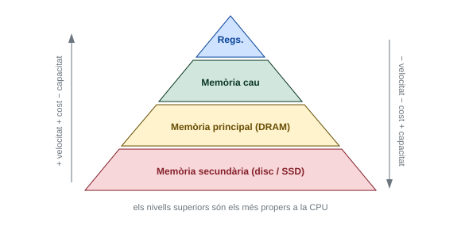
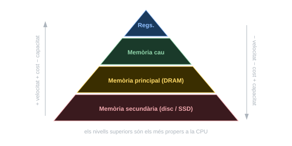
Cada nivell emmagatzema un subconjunt del contingut del nivell immediatament inferior. Quan el processador necessita una dada, la cerca primer al nivell més ràpid (la memòria cau); si no hi és, baixa al nivell següent, i així successivament. La memòria cau (MC) és el nom que rep el nivell que s’interposa entre el processador i la memòria principal; és la peça central d’aquest tema.
A banda del rendiment, la memòria cau té també un impacte positiu en el consum energètic: com que la majoria dels accessos es resolen a la MC sense necessitat d’accedir a la memòria principal, el nombre total d’operacions que activen els circuits de la DRAM disminueix, i amb ell el factor d’activitat \(\alpha\) de la fórmula de potència dinàmica \(P_d = \alpha \cdot C \cdot V^2 \cdot f_{clock}\) (Secció 6.3.1).
7.2 La memòria cau
7.2.1 Principi de funcionament
La memòria cau és una memòria auxiliar petita i ràpida que s’interposa entre el processador i la memòria principal. Emmagatzema un subconjunt del contingut de la memòria principal, amb l’objectiu de retenir les dades amb més probabilitat de ser accedides aviat:
- Explota la localitat temporal: cada cop que la CPU accedeix a una dada de la memòria principal, en guarda simultàniament una còpia a la MC. Si la mateixa dada es torna a referenciar i encara és a la MC, l’accés es resol sense necessitat d’anar a la memòria principal.
- Explota la localitat espacial: cada cop que la CPU accedeix a una dada, la MC no en copia únicament la dada individual sinó tot el bloc al qual pertany (un fragment contigu de memòria de mida fixa). Si posteriorment s’accedeix a una dada propera, és probable que ja sigui al bloc copiat i l’accés es torni a resoldre ràpidament.
Un estudiant d’història va a l’arxiu de la seva ciutat per elaborar un treball de recerca. Els documents que necessita consultar es troben agrupats en carpetes a les prestatgeries de l’arxiu (la memòria principal). Cada cop que necessita un document, es desplaça a la prestatgeria, el consulta i torna al seu lloc de treball.
Com que alguns documents s’han de consultar repetidament (localitat temporal), l’estudiant decideix emportar-se’ls a l’escriptori (la memòria cau) per estalviar viatges. A més, com que els documents que necessita sovint es troben dins les mateixes carpetes (localitat espacial), decideix que cada cop que va a la prestatgeria s’endú la carpeta sencera, no tan sols el document concret.
7.2.2 Organització: blocs, línies, etiquetes i bit de validesa
La MC no guarda dades soltes sinó blocs sencers de mida fixa \(B\) bytes, on \(B\) és una potència de 2 (les mides típiques oscil·len entre 16 i 128 bytes). L’espai d’adreçament de la memòria principal es subdivideix lògicament en blocs de \(B\) bytes: l’adreça inicial de cada bloc és un múltiple de \(B\), i cada bloc té un identificador únic anomenat número de bloc, que s’obté numerant correlativament tots els blocs des de zero.
Internament, la MC s’organitza com una taula. Cada entrada d’aquesta taula s’anomena línia i pot contenir un bloc de dades o estar buida. Per a cada línia, la MC emmagatzema tres elements:
- El bit de validesa (\(V\), validity bit): indica si la línia conté un bloc vàlid (\(V=1\)) o està buida (\(V=0\)).
- L’etiqueta (tag o label): identifica quin bloc de la memòria principal és guardat a la línia. Està formada pels bits del número de bloc (o una part d’aquests, com es veurà a la Secció 7.3).
- Les dades: el contingut del bloc de memòria que s’ha copiat a la línia.
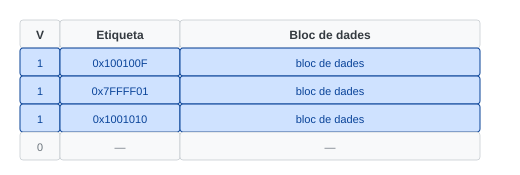
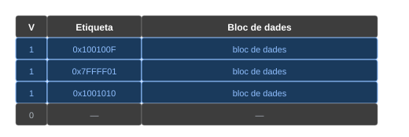
El número de bloc (identificador de bloc) i el desplaçament (posició de la dada dins el bloc, offset) s’obtenen a partir de l’adreça \(A\) de la dada a la memòria principal mitjançant la divisió i el mòdul de \(B\), respectivament:
\[\text{num\_bloc} = A \div B\]
\[\text{offset} = A \bmod B\]
Com que \(B = 2^b\), aquestes operacions es redueixen a una simple descomposició de bits: els \(b\) bits de menys pes de \(A\) són el desplaçament, i la resta és el número de bloc.
Pregunta: Suposem blocs de mida \(B = 16\) bytes (\(b = 4\)) i una adreça $A = $ 0x100100F8. Determineu el número de bloc i el desplaçament.
Solució: Descomposem l’adreça en binari separant els 4 bits de menys pes:
\[A = \underbrace{0001\,0000\,0000\,0001\,0000\,0000\,1111}_{\text{num\_bloc} = \texttt{0x100100F}}\;\underbrace{1000}_{\text{offset} = 8}\]
Si l’accés és a un word de 4 bytes (lw), el word offset (posició del word dins el bloc) és:
\[\text{word\_offset} = \text{offset} \div 4 = 2\]
7.2.3 Terminologia de rendiment
En accedir a una dada, la MC comprova si el bloc que la conté és present:
- Encert (hit): la dada és a la MC i l’accés es resol en un temps curt \(t_h\), característic de la MC.
- Fallada (miss): la dada no és a la MC. Cal accedir a la memòria principal per obtenir el bloc, cosa que afegeix un temps de penalització \(t_p\) al temps d’accés total:
\[t_{acc} = \begin{cases} t_h & \text{(encert)} \\ t_h + t_p & \text{(fallada)} \end{cases}\]
S’anomenen taxa d’encerts (\(h\)) i taxa de fallades (\(m\)) les fraccions d’accessos que resulten en encert i en fallada respectivament:
\[h = \frac{\text{núm. encerts}}{\text{núm. referències}} \qquad m = \frac{\text{núm. fallades}}{\text{núm. referències}} = 1 - h\]
7.2.4 Gestió d’una lectura
L’operació d’una lectura il·lustra la mecànica bàsica de la MC. Suposem blocs de 16 bytes i que la CPU llegeix una dada a l’adreça $A = $ 0x100100F8 (num_bloc = 0x100100F, desplaçament = 8).
Cas d’encert: El bloc és present a la MC.
- La MC consulta les etiquetes de les línies vàlides i troba que el num_bloc de \(A\) coincideix amb l’etiqueta d’una línia. S’ha produït un encert.
- La MC usa el desplaçament com a selector per extreure la dada sol·licitada del bloc guardat i la transfereix a la CPU.
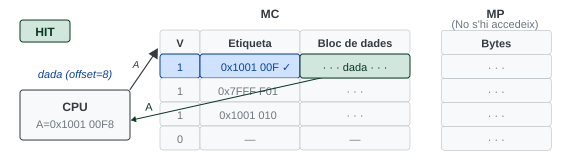
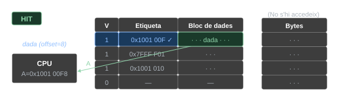
0x100100F8: la dada es transfereix directament de la MC a la CPU.
Cas de fallada: El bloc no és present a la MC.
- La MC comprova les etiquetes i no troba el num_bloc de \(A\). S’ha produït una fallada: la CPU es bloqueja fins que la MC resolgui l’accés.
- La MC sol·licita a la memòria principal el bloc sencer que conté \(A\), enviant-li l’adreça inicial del bloc (
0x100100F0, que s’obté posant a zero els \(b\) bits de desplaçament de \(A\)). - La MC decideix en quina línia emmagatzema el bloc rebut, hi escriu les dades, n’actualitza l’etiqueta i posa el bit de validesa a 1.
- La MC finalitza l’accés com si fos un encert: usa el desplaçament per extreure la dada i la transfereix a la CPU.
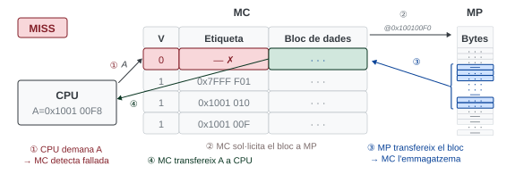
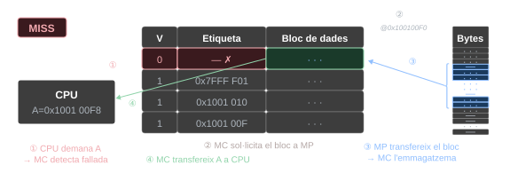
0x100100F8: el bloc es copia de la MP a la MC i la dada es transfereix a la CPU.
7.3 Polítiques d’emplaçament
Quan la MC ha de guardar un bloc procedent de la memòria principal, cal decidir en quina línia l’emmagatzema. Aquest és el problema que resol la política d’emplaçament (placement policy). La política d’emplaçament determina també on cal cercar un bloc quan la CPU hi vol accedir: si se sap en quines línies pot estar, la cerca és més ràpida.
Hi ha tres polítiques possibles, que formen un espectre de menys a més flexibilitat. Com es veurà, la flexibilitat té un cost en complexitat de maquinari, i el disseny real és sempre un compromís entre els dos factors.
7.3.1 Correspondència directa
En una memòria cau de correspondència directa (direct-mapped), cada bloc de la memòria principal té assignada una única línia on pot ser emmagatzemat. L’assignació es fa per mòdul: si la MC té \(N_L = 2^{n_l}\) línies, el bloc amb número de bloc \(n\) va sempre a la línia:
\[\text{índex} = n \bmod N_L\]
Com que \(N_L\) és potència de 2, el mòdul és simplement els \(n_l\) bits de menys pes del número de bloc. Combinant-ho amb la descomposició de bits de l’adreça de la Secció 7.2.2, l’adreça queda dividida en tres camps:
\[A = \underbrace{\cdots}_{\text{etiqueta}} \; \underbrace{\cdots}_{\text{índex}\;(n_l\text{ bits})} \; \underbrace{\cdots}_{\text{offset}\;(b\text{ bits})}\]
Com que tots els blocs que es mapen a una mateixa línia comparteixen el mateix índex, l’etiqueta pot prescindir d’aquests bits: n’hi ha prou amb els bits restants del número de bloc per identificar unívocament el bloc guardat.
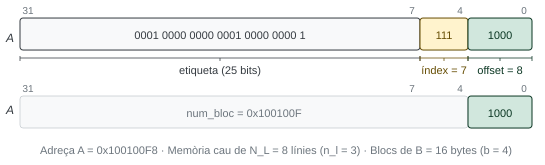
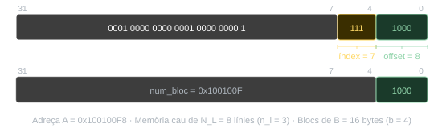
Pregunta: Suposem una memòria cau de correspondència directa amb \(N_L = 8\) línies (\(n_l = 3\)) i blocs de \(B = 16\) bytes (\(b = 4\)). A quina línia s’emmagatzema el bloc que conté l’adreça $A = $ 0x100100F8?
Solució:
\[\text{num\_bloc} = A \div 16 = \texttt{0x100100F}\]
\[\text{índex} = \texttt{0x100100F} \bmod 8 = 7\]
El bloc s’emmagatzema a la línia 7. En binari, l’índex correspon als 3 bits de menys pes del num_bloc:
\[A = \underbrace{0001\,0000\,0000\,0001\,0000\,0000\,1}_{\text{etiqueta}}\, \underbrace{111}_{\text{índex}=7}\, \underbrace{1000}_{\text{offset}=8}\]
El diagrama de blocs de la Figura 7.7 mostra el maquinari necessari per a una lectura. Els bits d’índex de l’adreça seleccionen una línia mitjançant un decodificador. Es llegeixen simultàniament l’etiqueta guardada, el bit de validesa i el bloc de dades. Els bits d’etiqueta de l’adreça es comparen amb l’etiqueta guardada: si coincideixen i \(V=1\), es produeix un encert i el multiplexor selecciona la dada indicada pel desplaçament.
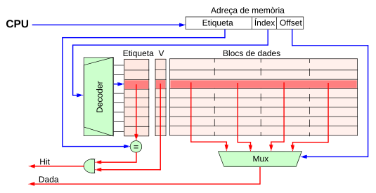
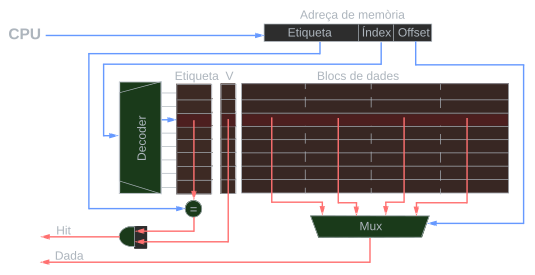
La correspondència directa és la política més senzilla i ràpida: amb un sol accés a la taula i una sola comparació es sap si hi ha encert o fallada. El seu inconvenient és la rigidesa: si dos blocs que s’accedeixen alternament es mapen a la mateixa línia, s’expulsaran mútuament a cada accés causant fallades contínues, fins i tot si la resta de línies estan buides. Això s’anomena conflicte i s’estudia en detall a la Secció 7.8.
7.3.2 Memòria cau associativa per conjunts
La memòria cau associativa per conjunts (set-associative) redueix els conflictes dotant cada posició de la memòria cau de \(N\) vies (ways) en lloc d’una sola. El conjunt de \(N\) vies associades a una mateixa posició s’anomena conjunt (set), i \(N\) és el grau d’associativitat.
L’assignació de blocs als conjunts segueix el mateix criteri que la correspondència directa: si la memòria cau té \(N_C = 2^{n_c}\) conjunts, el bloc \(n\) va al conjunt d’índex \(n \bmod N_C\). Però dins del conjunt, el bloc pot ocupar qualsevol de les \(N\) vies que estigui lliure. Si no n’hi ha cap de lliure, s’aplica un algorisme de reemplaçament (vegeu la Secció 7.4). La descomposició de bits és anàloga a la de correspondència directa, però amb \(n_c\) bits d’índex en lloc de \(n_l\):
\[A = \underbrace{\cdots}_{\text{etiqueta}} \; \underbrace{\cdots}_{\text{índex}\;(n_c\text{ bits})} \; \underbrace{\cdots}_{\text{offset}\;(b\text{ bits})}\]
Pregunta: Suposem adreces de 8 bits, blocs de \(B = 4\) bytes (\(b = 2\)) i una memòria cau associativa per conjunts de 4 conjunts (\(n_c = 2\)) amb 3 vies. A quin conjunt pertany el byte de l’adreça 0b00000100 (adreça 4)?
Solució:
\[\text{num\_bloc} = 4 \div 4 = 1\]
\[\text{índex} = 1 \bmod 4 = 1\]
El bloc s’ha d’emmagatzemar al conjunt 1, però pot ocupar qualsevol de les 3 vies que estigui lliure.
\[A = \underbrace{0000}_{\text{etiqueta}}\, \underbrace{01}_{\text{índex}=1}\, \underbrace{00}_{\text{offset}=0}\]
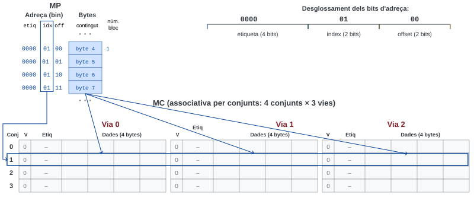
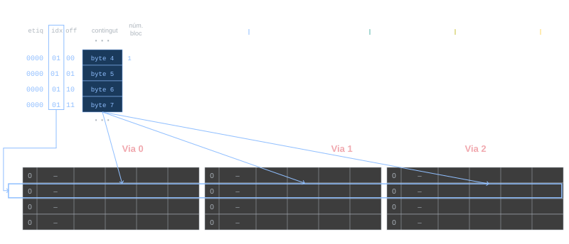
0b00000100 es mapa al conjunt 1 i pot ocupar qualsevol de les seves 3 vies.
El diagrama de blocs de la Figura 7.9 mostra que els bits d’índex seleccionen el conjunt mitjançant un decodificador (com a la correspondència directa), però dins del conjunt hi ha \(N\) comparadors en paral·lel, un per via. Si alguna via té la mateixa etiqueta i \(V=1\), una porta OR genera el senyal d’encert i un multiplexor \(N\):1 selecciona les dades de la via guanyadora, que el segon multiplexor (controlat pel desplaçament) usa per extreure la dada sol·licitada.
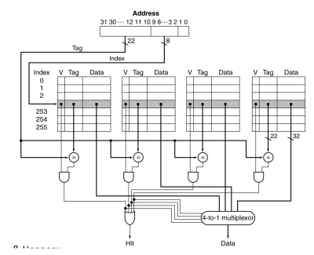
Observem que la correspondència directa és el cas particular \(N = 1\): un sol conjunt per posició, un sol comparador, sense necessitat de multiplexor de vies.
7.3.3 Memòria cau completament associativa
La memòria cau completament associativa (fully associative) porta la flexibilitat al límit: un bloc pot emmagatzemar-se a qualsevol línia de la memòria cau, sense cap restricció d’índex. Això elimina completament els conflictes (vegeu la Secció 7.8), però té un cost important: per saber si un bloc és present, cal comparar l’etiqueta amb totes les línies simultàniament.
Com que no hi ha índex, l’adreça es descompon només en dos camps:
\[A = \underbrace{\cdots}_{\text{etiqueta}} \; \underbrace{\cdots}_{\text{offset}\;(b\text{ bits})}\]
L’etiqueta és el número de bloc sencer. El nombre de línies no cal que sigui potència de 2.
El diagrama de blocs de la Figura 7.10 mostra que ara tots els comparadors operen sobre totes les línies alhora: no hi ha decodificador. Una porta OR sobre totes les sortides dels comparadors genera el senyal d’encert, i un multiplexor \(N_L\):1 selecciona la línia amb encert. El cost en maquinari creix linealment amb el nombre de línies \(N_L\), cosa que fa que les memòries cau completament associatives pràctiques tinguin pocs centenars de línies com a màxim.


La memòria cau completament associativa és el cas límit \(N_C = 1\): un sol conjunt que conté totes les línies. Des d’aquest punt de vista, les tres polítiques d’emplaçament no són categories separades sinó els extrems i el punt mig d’un mateix espectre, parametritzat pel nombre de conjunts \(N_C\) i el grau d’associativitat \(N\):
| Política | Conjunts \(N_C\) | Vies \(N\) |
|---|---|---|
| Correspondència directa | \(N_L\) | 1 |
| Associativa per conjunts | \(N_L / N\) | \(N\) |
| Completament associativa | 1 | \(N_L\) |
Per a una memòria cau amb \(N_C = 2^{n_c}\) conjunts i blocs de \(B = 2^b\) bytes, els bits d’una adreça de \(w\) bits es distribueixen sempre de la mateixa manera, de menys a més pes:
\[A = \underbrace{\overbrace{\cdots}^{w - n_c - b}\; \overbrace{\cdots}^{n_c}\; \overbrace{\cdots}^{b}}_w\]
\[\underbrace{\hspace{4.5em}}_{\text{etiqueta}} \underbrace{\hspace{2em}}_{\text{índex}} \underbrace{\hspace{2em}}_{\text{offset}}\]
Els casos extrems encaixen naturalment: si \(N_C = N_L\) (correspondència directa), \(n_c = n_l\) i l’etiqueta és mínima; si \(N_C = 1\) (completament associativa), \(n_c = 0\) i no hi ha bits d’índex.
7.4 Polítiques de reemplaçament
Quan la MC ha d’emmagatzemar un nou bloc i totes les vies del conjunt corresponent estan ocupades, cal alliberar-ne una. L’algorisme que decideix quina via s’elimina s’anomena política de reemplaçament. En una memòria cau de correspondència directa no hi ha elecció possible —cada bloc té una única línia assignada—, de manera que la política de reemplaçament només és rellevant per a les memòries cau associatives.
L’objectiu de qualsevol política de reemplaçament és minimitzar la taxa de fallades, és a dir, expulsar el bloc que tingui menys probabilitat de ser accedit en el futur. Com que el futur no és conegut, els algorismes reals intenten predir-lo a partir del comportament passat. Hi ha quatre algorismes principals:
LRU (Least Recently Used): Reemplaça el bloc que fa més temps que no s’ha accedit. Es basa en la localitat temporal: si un bloc no s’ha usat recentment, és poc probable que es necessiti aviat. És l’algorisme que produeix la menor taxa de fallades en la majoria de casos pràctics, i és el que s’usarà en els exercicis d’aquest curs.
La implementació de LRU és senzilla per a 2 vies (un sol bit per conjunt n’és suficient), però es complica per a 4 o més vies. En la pràctica, per a 4 vies s’usa un pseudo-LRU: les vies s’agrupen en dues parelles, i tres bits per conjunt aproximen l’ordre d’ús (un bit indica quina parella ha estat accedida menys recentment, i un bit per parella, quina via dins de cadascuna).
Aleatori (Random): Selecciona la via víctima a l’atzar, normalment mitjançant un mecanisme de maquinari senzill (per exemple, un comptador cíclic). No és tan eficient com LRU, però la seva implementació és molt simple i la seva taxa de fallades s’aproxima a la de LRU quan el grau d’associativitat és alt. És una alternativa atractiva en aquests casos.
FIFO (First In, First Out): Reemplaça el bloc que fa més temps que va ingressar al conjunt. No s’ha de confondre amb LRU: FIFO considera quan va entrar el bloc, independentment de si s’ha accedit des d’aleshores. És menys eficient que LRU perquè un bloc que s’ha accedit recentment pot ser expulsat si va entrar fa molt de temps.
OPT (Optimal): Reemplaça el bloc que serà accedit més tard en el futur. S’ha demostrat teòricament que OPT obté la taxa de fallades mínima possible. Malauradament, no és implementable en maquinari real perquè requereix conèixer els accessos futurs. La seva utilitat pràctica és establir una cota inferior de la taxa de fallades: en entorns de simulació, permet avaluar quant de marge de millora queda per a nous algorismes. Val la pena observar que LRU és, de fet, un intent intuïtiu d’aproximar OPT: «el bloc que fa més temps que no s’usa» és una predicció raonable de «el bloc que s’usarà més tard».
Pregunta: Suposem adreces de 8 bits, blocs de \(B = 4\) bytes (\(b = 2\)) i una memòria cau associativa per conjunts de 4 conjunts (\(n_c = 2\)) amb 2 vies, inicialment buida. Donada la seqüència d’accessos de lectura a les adreces 4, 38, 6, 52 (totes al conjunt 1), determineu l’estat de la memòria cau i indiqueu el tipus de cada accés (encert o fallada) usant LRU.
Solució:
@4→ bloc 1, conjunt 1 → Fallada (via 0 lliure → s’ocupa).@38→ bloc 9, conjunt 1 → Fallada (via 1 lliure → s’ocupa; ara LRU = via 0, la que fa més temps que no s’accedeix).@6→ bloc 1, conjunt 1 → Encert (via 0). LRU passa a ser la via 1.@52→ bloc 13, conjunt 1 → Fallada (cap via lliure; reemplaça LRU = via 1).
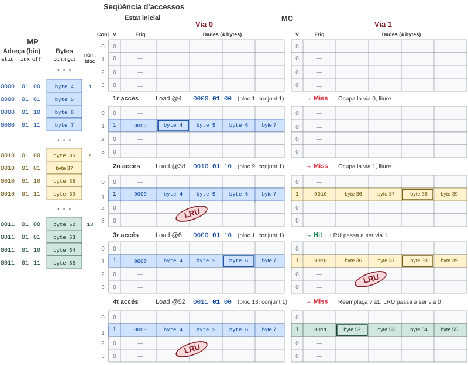
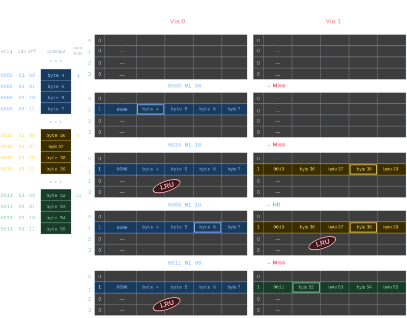
@4, @38, @6, @52. Tots els accessos van al conjunt 1; els conjunts 0, 2 i 3 resten buits.
7.5 Polítiques d’escriptura
Fins ara s’ha suposat que tots els accessos a memòria són lectures. Les escriptures introdueixen un problema nou: quan la CPU modifica una dada, la còpia a la MC i la còpia a la memòria principal divergeixen. Cal decidir com i quan sincronitzar-les. Això és el que resol la política d’escriptura.
La política d’escriptura té dues dimensions independents: com es gestiona un encert d’escriptura, i com es gestiona una fallada d’escriptura.
7.5.1 Gestió de la coherència en cas d’encert
Quan una escriptura produeix un encert, la dada és present a la MC i cal decidir si s’actualitza també la memòria principal:
Escriptura immediata (write-through): S’escriu simultàniament a la MC i a la memòria principal. Ambdues còpies romanen sempre iguals (coherència garantida). Quan calgui reemplaçar un bloc, es pot fer directament sense cap escriptura prèvia a la memòria principal, ja que aquesta ja té la versió actualitzada.
L’inconvenient és que cada escriptura accedeix a la memòria principal, que és lenta. Per mitigar-ho s’usa un buffer d’escriptura: les escriptures pendents s’encuen al buffer i es transfereixen a la memòria principal en segon pla mentre la CPU continua executant. Si el buffer s’omple (perquè el ritme d’escriptures supera la velocitat de buidatge), la CPU s’ha d’aturar fins que hi hagi espai.
Escriptura retardada (write-back o copy-back): S’escriu únicament a la MC. La memòria principal queda temporalment desactualitzada. Per saber si un bloc ha estat modificat, cada línia incorpora un bit de modificació (dirty bit, \(D\)). \(D = 1\) indica que el bloc ha estat modificat i la memòria principal no té la versió actualitzada. Quan calgui reemplaçar un bloc amb \(D = 1\), caldrà copiar-lo prèviament a la memòria principal per no perdre les modificacions.
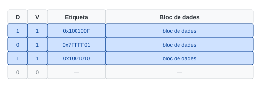
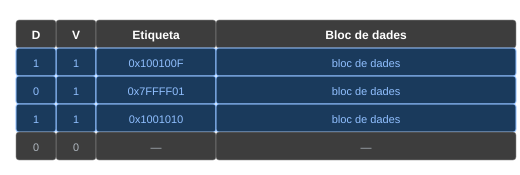
L’escriptura retardada té l’avantatge que múltiples escriptures al mateix bloc generen una sola escriptura a la memòria principal (quan el bloc s’expulsa), reduint el tràfic total. El desavantatge és que una fallada que requereix expulsar un bloc amb \(D = 1\) allarga el temps de penalització, ja que cal copiar primer el bloc antic a la memòria principal abans de copiar el nou bloc a la MC.
7.5.2 Polítiques en cas de fallada
Quan una escriptura produeix una fallada (el bloc no és a la MC), hi ha dues alternatives:
Escriptura amb assignació (write allocate): Es copia el bloc de la memòria principal a la MC (igual que en una fallada de lectura) i després s’escriu la dada a la MC. Els accessos posteriors al mateix bloc es resoldran des de la MC.
Escriptura sense assignació (no-write allocate): S’escriu la dada directament a la memòria principal sense copiar el bloc a la MC. La memòria cau no s’altera. És adequada quan no s’espera que el bloc torni a ser accedit aviat.
7.5.3 Combinacions habituals
Combinant una política d’encert amb una política de fallada s’obté la política d’escriptura completa. A la pràctica, no totes les combinacions són iguals de comunes:
| Amb assignació | Sense assignació | |
|---|---|---|
| Escriptura immediata | ✓ | ✓ |
| Escriptura retardada | ✓ | — |
L’escriptura retardada sense assignació és poc habitual: si no es copia el bloc a la MC en la fallada d’escriptura, el bit \(D\) no té cap efecte útil. En aquest curs s’estudien les tres combinacions marcades:
- Escriptura immediata amb assignació
- Escriptura immediata sense assignació
- Escriptura retardada amb assignació
7.5.4 Exemples
Els exemples següents usen una memòria cau de correspondència directa molt senzilla per il·lustrar el comportament de cada política. El context és comú als tres:
- Processador amb adreces de 8 bits (rang 0–255).
- Blocs de \(B = 4\) bytes (\(b = 2\)): 2 bits de desplaçament, 6 bits de número de bloc.
- Memòria cau de 2 línies (\(n_l = 1\)): 1 bit d’índex, 5 bits d’etiqueta.
Es parteix sempre de l’estat de la memòria cau després d’executar la seqüència inicial de 5 lectures:
lw @0(bloc 0, índex 0) → Fallada, copia bloc 0 a línia 0.lw @2(bloc 0, índex 0) → Encert.lw @4(bloc 1, índex 1) → Fallada, copia bloc 1 a línia 1.lw @6(bloc 1, índex 1) → Encert.lw @8(bloc 2, índex 0) → Fallada, reemplaça bloc 0 a línia 0.
Estat resultant: línia 0 conté el bloc 2 (@8–@11), línia 1 conté el bloc 1 (@4–@7).
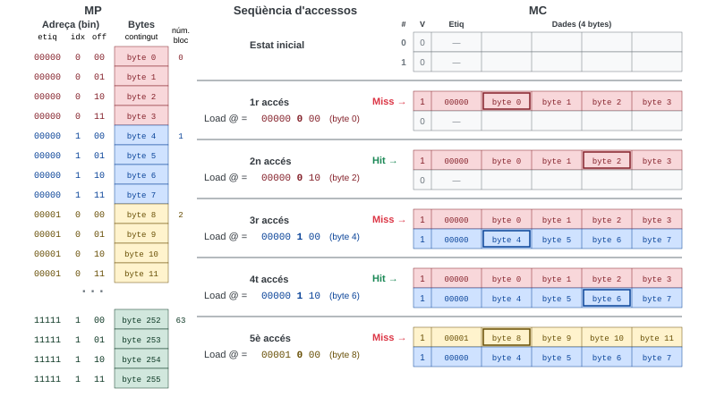
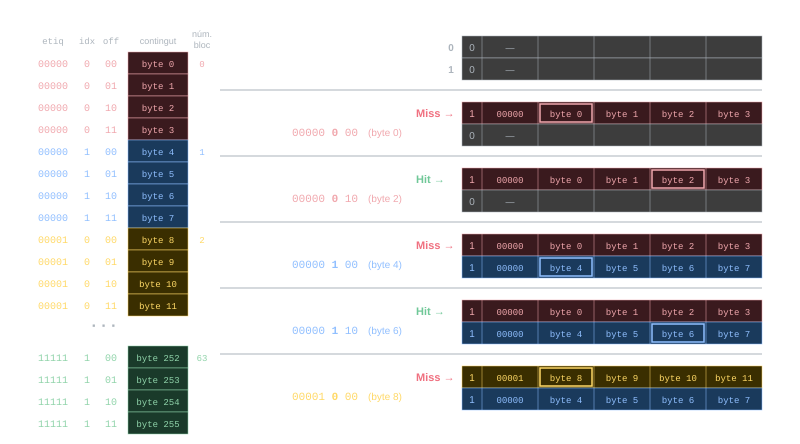
@8–@11) i la línia 1 conté el bloc 1 (@4–@7).
Partint de l’estat inicial, s’executen dues escriptures:
sw @10(bloc 2, índex 0) → Encert: s’escriu a la MC i a la memòria principal simultàniament.sw @252(bloc 63, índex 1) → Fallada: es copia primer el bloc 63 de la memòria principal a la línia 1 (reemplaçant el bloc 1), i després s’escriu a la MC i a la memòria principal.
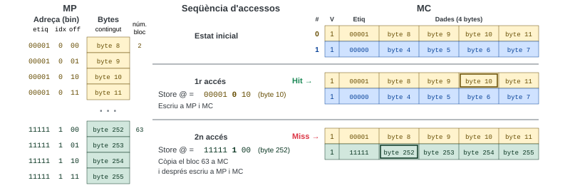
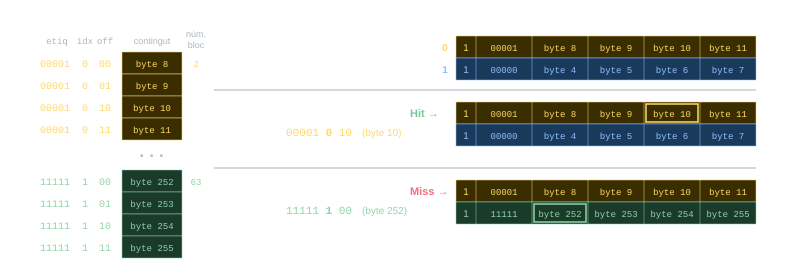
Partint del mateix estat inicial, les mateixes dues escriptures:
sw @10(bloc 2, índex 0) → Encert: s’escriu a la MC i a la memòria principal (igual que amb assignació).sw @252(bloc 63, índex 1) → Fallada: s’escriu únicament a la memòria principal. La memòria cau no s’altera.
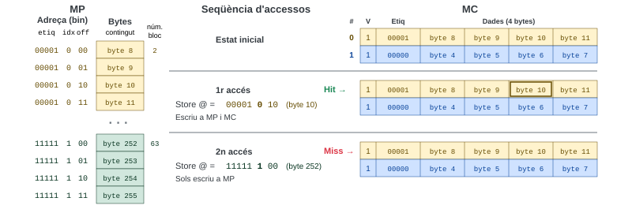
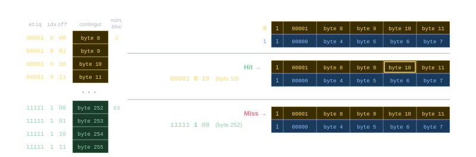
En aquest cas la memòria cau incorpora el bit \(D\). Partint del mateix estat inicial (amb \(D = 0\) a totes les línies), s’executen una escriptura, una lectura i una altra escriptura:
sw @10(bloc 2, índex 0) → Encert: s’escriu únicament a la MC i es posa \(D = 1\) a la línia 0.lw @0(bloc 0, índex 0) → Fallada amb \(D = 1\) a la línia 0: cal primer copiar el bloc 2 (modificat) a la memòria principal, i després copiar el bloc 0 a la línia 0 (\(D \leftarrow 0\)).sw @252(bloc 63, índex 1) → Fallada amb \(D = 0\) a la línia 1: es copia el bloc 63 a la línia 1 (reemplaça el bloc 1) i s’escriu a la MC (\(D \leftarrow 1\)).
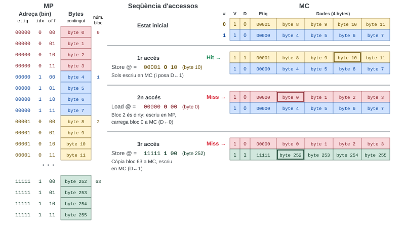
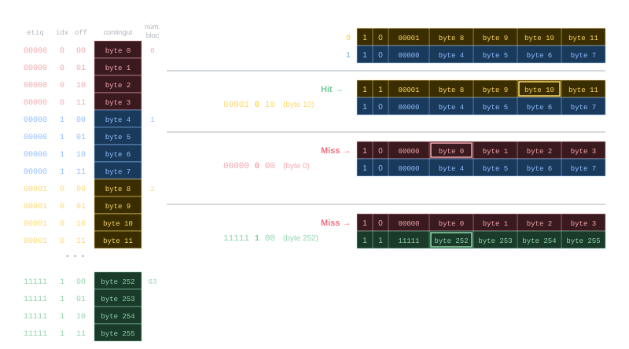
7.6 Polítiques — Resum
El disseny d’una memòria cau queda determinat per tres decisions independents: on es pot emmagatzemar cada bloc (política d’emplaçament, Secció 7.3), quin bloc s’expulsa quan no hi ha lloc (política de reemplaçament, Secció 7.4) i com se sincronitzen les escriptures amb la memòria principal (política d’escriptura, Secció 7.5). La Figura 7.17 recull les opcions estudiades per a cadascuna.
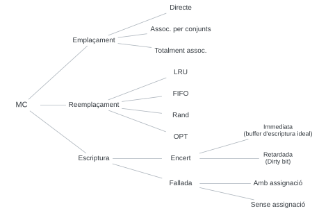
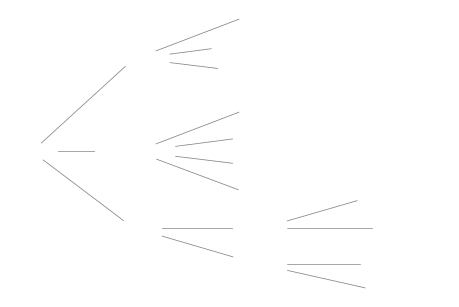
7.7 Rendiment
Les decisions de disseny estudiades fins ara —política d’emplaçament, d’escriptura i de reemplaçament— afecten el rendiment del sistema. Cal disposar d’eines per quantificar aquest impacte i comparar alternatives. En aquesta secció es defineixen les dues mètriques principals: el temps d’accés mitjà a memòria (TAM) i el temps d’execució (\(t_{exe}\)).
7.7.1 Model de temps simplificat
El temps d’accés (\(t_{acc}\)) és el temps que transcorre entre la sol·licitud d’accés de la CPU i el moment en què la dada és efectivament disponible, de manera que la CPU pot prosseguir l’execució.
En cas d’encert, el temps d’accés és \(t_{acc} = t_h\). Aquest temps inclou la comprovació de l’etiqueta i la transferència de la dada entre la MC i la CPU, i és un paràmetre constructiu fix de la memòria cau.
En cas de fallada, cal afegir un temps de penalització \(t_p\):
\[t_{acc} = t_h + t_p\]
El temps de penalització depèn de la política d’escriptura. Per modelar-lo de forma unívoca, es defineix \(t_{bloc}\) com el temps necessari per transferir un bloc sencer entre la MC i la memòria principal. Amb aquest paràmetre, el temps de penalització per a cada política és el següent:
1. Escriptura immediata amb assignació
Totes les fallades (de lectura o d’escriptura) tenen la mateixa penalització: cal copiar el bloc de la memòria principal a la MC (\(t_{bloc}\)) i transferir la dada a/de la CPU (\(t_h\)):
\[t_p = t_{bloc} + t_h\]
2. Escriptura immediata sense assignació
- Fallada de lectura: igual que en el cas anterior:
\[t_p = t_{bloc} + t_h\]
- Fallada d’escriptura: s’escriu la dada al buffer d’escriptura durant la comprovació de l’etiqueta, sense cap temps extra:
\[t_p = 0\]
3. Escriptura retardada amb assignació
La penalització depèn de si el bloc que cal reemplaçar ha estat modificat:
- Bloc no modificat (\(D = 0\)): igual que en l’escriptura immediata:
\[t_p = t_{bloc} + t_h\]
- Bloc modificat (\(D = 1\)): cal primer copiar el bloc antic a la memòria principal (\(t_{bloc}\)), després copiar el nou bloc de la memòria principal a la MC (\(t_{bloc}\)), i finalment transferir la dada a/de la CPU (\(t_h\)):
\[t_p = 2 \cdot t_{bloc} + t_h\]
| Immediata amb assignació | Immediata sense assignació | Retardada amb assignació | |
|---|---|---|---|
| Fallada de lectura | \(t_{bloc} + t_h\) | \(t_{bloc} + t_h\) | \(t_{bloc} + t_h\) (si \(D=0\)) |
| \(2t_{bloc} + t_h\) (si \(D=1\)) | |||
| Fallada d’escriptura | \(t_{bloc} + t_h\) | \(0\) | \(t_{bloc} + t_h\) (si \(D=0\)) |
| \(2t_{bloc} + t_h\) (si \(D=1\)) |
7.7.2 Temps d’accés mitjà (TAM)
Com que el temps d’accés varia en cada referència (encert o fallada, lectura o escriptura, bloc modificat o no), s’usa el temps d’accés mitjà (TAM), també anomenat average memory access time (AMAT), que en pondera la mitjana:
\[\text{TAM} = t_h + m \cdot t_p \tag{7.1}\]
on \(m\) és la taxa de fallades i \(t_p\) el temps de penalització mitjà.
7.7.2.1 Memòria cau unificada
Si hi ha una sola memòria cau per a instruccions i dades, l’expressió Equació 7.1 és directament aplicable. Quan la política d’escriptura implica penalitzacions diferents per a fallades de lectura i d’escriptura, cal ponderar:
- Escriptura immediata sense assignació: si \(p_e\) és la fracció de fallades que corresponen a escriptures:
\[t_p = (1 - p_e) \cdot (t_{bloc} + t_h) + p_e \cdot 0 = (1 - p_e)(t_{bloc} + t_h)\]
- Escriptura retardada amb assignació: si \(p_m\) és la fracció de fallades que reemplacen un bloc modificat (\(D = 1\)): \[t_p = (1 - p_m)(t_{bloc} + t_h) + p_m(2 \cdot t_{bloc} + t_h) = (1 + p_m) \cdot t_{bloc} + t_h\]
La fórmula correcta del temps de penalització mitjà per a l’escriptura retardada amb assignació és:
\[t_p = (1 + p_m) \cdot t_{bloc} + t_h\]
Cal notar que \(t_h\) no es multiplica per \((1 + p_m)\): el terme \(t_h\) apareix una sola vegada independentment de si el bloc és modificat o no.
7.7.2.2 TAM amb memòries cau separades d’instruccions i dades
En moltes arquitectures, la CPU disposa de dues memòries cau independents: una memòria cau d’instruccions (\(\text{MC}_i\), de sols lectura) i una memòria cau de dades (\(\text{MC}_d\), usada pels lw i sw). Siguin:
- \(n_{ins}\): nombre d’accessos a \(\text{MC}_i\) (igual al nombre d’instruccions executades).
- \(n_{dat}\): nombre d’accessos a \(\text{MC}_d\) (igual al nombre de
lwisw). - \(n_{refs} = n_{ins} + n_{dat}\): nombre total de referències a memòria.
- \(m_i\), \(m_d\): taxes de fallades de \(\text{MC}_i\) i \(\text{MC}_d\).
- \(t_{pi}\), \(t_{pd}\): temps de penalització de \(\text{MC}_i\) i \(\text{MC}_d\).
El TAM pondera les penalitzacions de cada memòria cau per la seva fracció d’accessos:
\[\text{TAM} = t_h + \frac{n_{ins}}{n_{refs}} \cdot m_i \cdot t_{pi} + \frac{n_{dat}}{n_{refs}} \cdot m_d \cdot t_{pd} \tag{7.2}\]
És habitual expressar-ho en funció del nombre de referències a memòria per instrucció \(n_r = n_{refs} / n_{ins}\), que és sempre \(\geq 1\) (tota instrucció requereix almenys un accés per al fetch):
\[\text{TAM} = t_h + \frac{1}{n_r} \cdot m_i \cdot t_{pi} + \left(1 - \frac{1}{n_r}\right) \cdot m_d \cdot t_{pd} \tag{7.3}\]
7.7.3 Impacte de les fallades en el temps d’execució
El TAM mesura l’eficiència de la memòria cau de forma aïllada, però l’objectiu final és el temps d’execució del sistema. Les fallades de memòria cau provoquen cicles d’espera que s’afegeixen als cicles ideals:
\[\text{CPI} = \text{CPI}_{ideal} + \text{CPI}_{penal}\]
El terme \(\text{CPI}_{ideal}\) inclou tots els cicles d’execució excepte les esperes per fallades de memòria cau. El terme \(\text{CPI}_{penal}\) inclou exclusivament els cicles d’espera causats per les fallades:
\[\text{CPI}_{penal} = \frac{t_p \cdot n_{fallades}}{n_{ins}} = t_p \cdot m \cdot \frac{n_{refs}}{n_{ins}} = t_p \cdot m \cdot n_r\]
on \(t_p\) i \(m\) s’expressen en cicles i en fracció respectivament. El temps d’execució queda:
\[t_{exe} = (\text{CPI}_{ideal} + t_p \cdot m \cdot n_r) \cdot n_{ins} \cdot t_c \tag{7.4}\]
on \(t_c\) és el període de rellotge. La Figura 7.18 il·lustra com les fallades de memòria cau s’insereixen com a temps extra en el flux d’execució de les instruccions.

De l’expressió Equació 7.4 s’extreuen dues conclusions pràctiques:
- Per reduir \(\text{CPI}_{penal}\) cal reduir \(m\) (la taxa de fallades) o \(t_p\) (la penalització). L’associativitat redueix \(m\); les memòries cau multinivell redueixen \(t_p\) (vegeu la Secció 7.9).
- El terme \(\text{CPI}_{ideal}\) depèn de la microarquitectura del processador, mentre que \(\text{CPI}_{penal}\) depèn del disseny de la memòria cau i del programa. Millorar un sense millorar l’altre té un impacte limitat, d’acord amb la llei d’Amdahl (Secció 6.2).
7.8 Tipologia de les fallades
Les fallades de memòria cau es classifiquen en tres categories, conegudes com les tres C. Aquesta classificació permet identificar la causa de cada fallada i raonar sobre quines mesures de disseny poden reduir-la.
Cold-start (o obligatòries): es produeixen el primer cop que s’accedeix a un bloc. Per definició, cap memòria cau pot tenir un bloc que no s’ha accedit mai, de manera que aquestes fallades són inevitables independentment de la política d’emplaçament, del grau d’associativitat o de la capacitat de la memòria cau. El nombre total de fallades obligatòries d’un programa és igual al nombre de blocs diferents que accedeix.
Conflicte (o col·lisió): es produeixen quan dos o més blocs que s’accedeixen alternament es mapen al mateix conjunt i s’expulsen mútuament, tot i que hi ha línies lliures en altres conjunts. Són exclusives de les memòries cau amb indexació (correspondència directa i associativa per conjunts): en una memòria cau completament associativa, per definició, no hi pot haver conflictes. Augmentar el grau d’associativitat redueix les fallades de conflicte.
Capacitat: es produeixen perquè la memòria cau no és prou gran per contenir tots els blocs que el programa necessita simultàniament (el working set). Quan el working set supera la capacitat de la memòria cau, alguns blocs s’expulsen i, quan es tornen a necessitar, fallen de nou. Aquestes fallades no es poden eliminar augmentant l’associativitat: l’única solució és augmentar la capacitat de la memòria cau.
| Tipus | Causa | Solució |
|---|---|---|
| Cold-start | Primer accés al bloc | Cap (inevitables) |
| Conflicte | Competència per un conjunt | Augmentar l’associativitat |
| Capacitat | Working set > capacitat | Augmentar la capacitat |
7.8.1 Exemple: fallades de conflicte i cold-start
Considerem la funció C següent, executada en un processador RV32I amb blocs de 8 bytes (2 words per bloc, \(b = 3\)):
Suposem una memòria cau de correspondència directa amb 4 línies (\(n_l = 2\)), inicialment buida. Els vectors A i B es troben en posicions contigües de memòria: A comença al bloc 0 i B al bloc 4.
Com que cada bloc conté 2 enters (8 bytes / 4 bytes per int), els elements A[i] i A[i+1] van al mateix bloc, i el mateix passa amb B. La taula següent mostra el mapatge complet:
i |
Bloc de A[i] |
Bloc de B[i] |
Índex (línia) |
|---|---|---|---|
| 0, 1 | 0 | 4 | 0 |
| 2, 3 | 1 | 5 | 1 |
| 4, 5 | 2 | 6 | 2 |
| 6, 7 | 3 | 7 | 3 |
Per a cada parella d’iteracions, els blocs de A[i] i B[i] difereixen exactament en \(N_L = 4\): sumar \(N_L\) no altera els \(n_l = 2\) bits de menys pes del número de bloc (l’índex), de manera que tots dos blocs es mapen a la mateixa línia però amb etiquetes diferents. El resultat és que A[i] i B[i] s’expulsen mútuament a cada accés.
La traça dels primers quatre valors de i mostra els dos tipus de fallada:
- \(i = 0\):
lw A[0](bloc 0, línia 0) → fallada obligatòria; carrega bloc 0.lw B[0](bloc 4, línia 0) → fallada obligatòria; reemplaça bloc 0. - \(i = 1\):
lw A[1](bloc 0, línia 0) → fallada de conflicte; el bloc 0 havia estat carregat a \(i=0\) però expulsat perB[0].lw B[1](bloc 4, línia 0) → fallada de conflicte. - \(i = 2\):
lw A[2](bloc 1, línia 1) → fallada obligatòria; primer accés al bloc 1.lw B[2](bloc 5, línia 1) → fallada obligatòria. - \(i = 3\):
lw A[3](bloc 1, línia 1) → fallada de conflicte.lw B[3](bloc 5, línia 1) → fallada de conflicte.
El patró es repeteix per a les parelles \(i = 4,5\) i \(i = 6,7\). En total: 8 fallades obligatòries (iteracions parelles, primer accés al bloc) i 8 fallades de conflicte (iteracions senars, reaccés a un bloc expulsat). Els 16 accessos fallen.
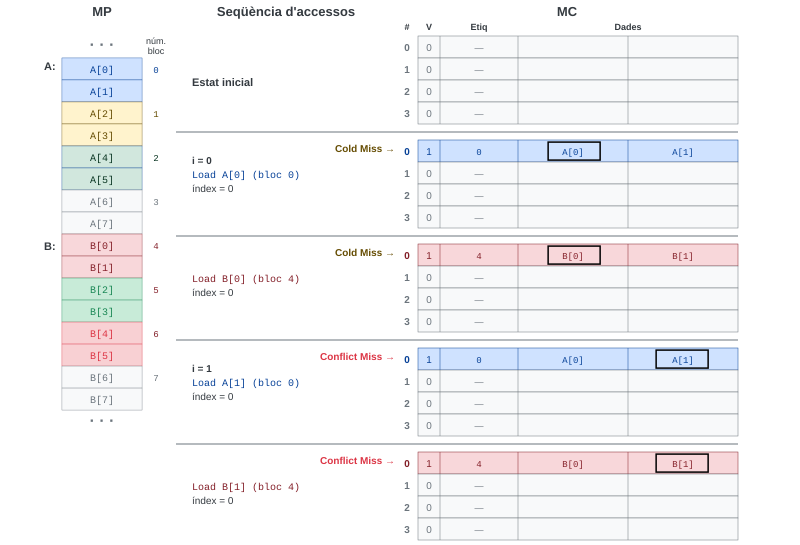
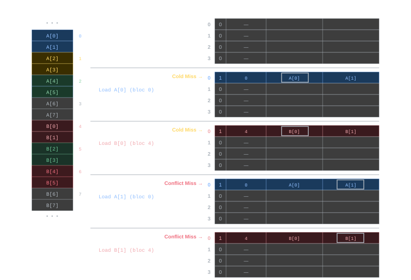
Una memòria cau associativa per conjunts de 2 vies eliminaria completament les fallades de conflicte d’aquest exemple: els blocs de A i B podrien coexistir a les dues vies del mateix conjunt.
7.8.2 Exemple: fallades de capacitat
Considerem ara la funció C següent, executada amb la mateixa configuració però amb una memòria cau completament associativa de 4 línies (eliminant així qualsevol conflicte):
El vector V ocupa 8 blocs de 2 words cadascun. La memòria cau, amb 4 línies, només pot contenir la meitat del vector simultàniament.
- Primer bucle: els blocs de
V[0]–V[7]entren a la memòria cau amb fallades obligatòries. Quan s’accedeix aV[8]–V[15], la memòria cau és plena i els blocs de la primera meitat s’expulsen (LRU). - Segon bucle: quan es torna a accedir a
V[0]–V[7], els blocs ja no hi són. Fallen de nou: són fallades de capacitat.
Augmentar l’associativitat no resoldria res: les fallades es produeixen perquè el working set (8 blocs) supera la capacitat de la memòria cau (4 línies), no per cap conflicte d’índex. L’única solució seria una memòria cau de 8 o més línies.
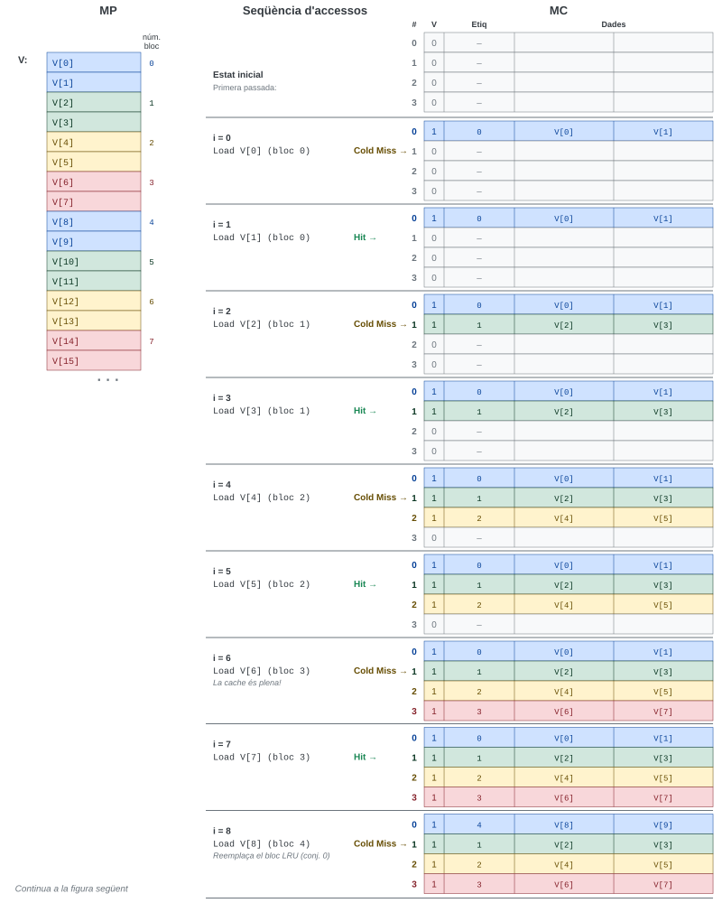
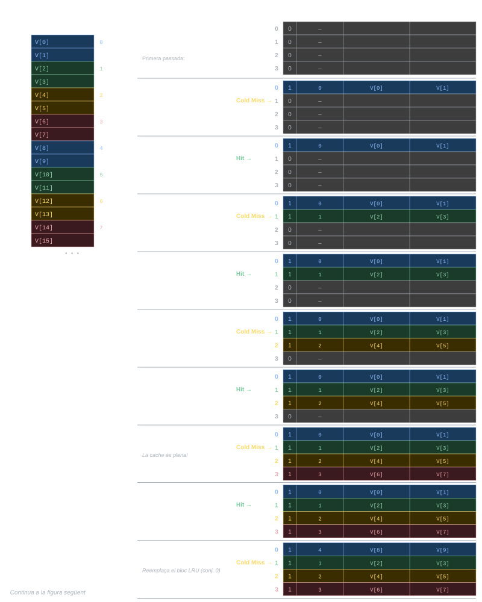
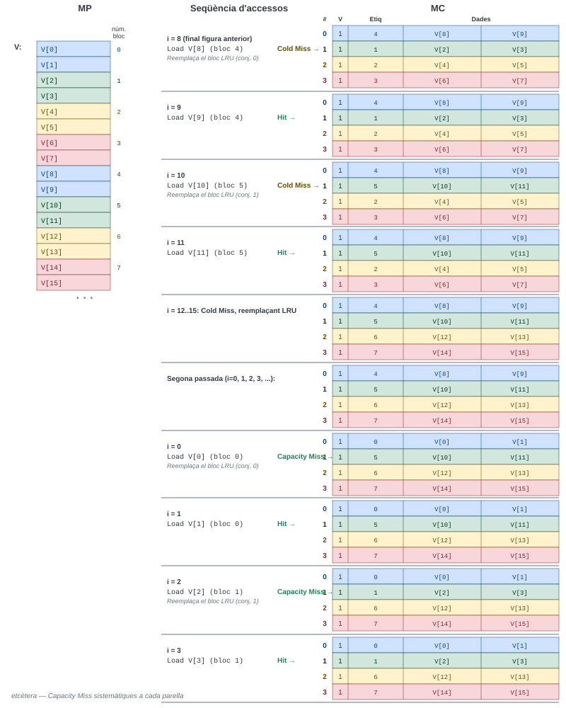
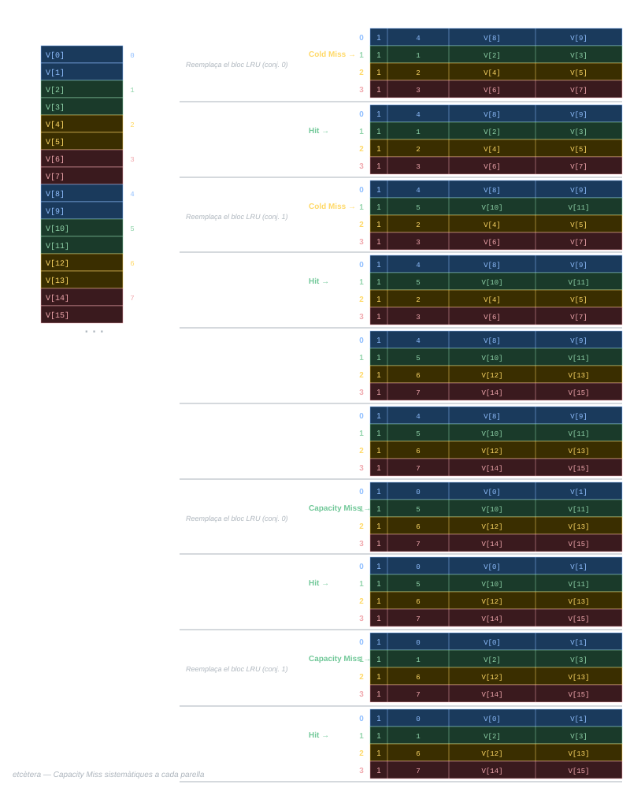
7.9 Memòries cau multinivell
A la Secció 7.7.3 s’ha vist que el terme dominant del temps d’execució pot ser \(\text{CPI}_{penal} = t_p \cdot m \cdot n_r\). L’associativitat redueix \(m\), però no aborda el problema de \(t_p\): el temps que tarda la memòria principal a respondre una fallada no ha disminuït al llarg dels anys al mateix ritme que el temps de processament d’una instrucció. En conseqüència, \(t_p\) ha esdevingut una fracció cada cop més dominant del temps d’execució.
La solució és aplicar el mateix principi que va donar lloc a la memòria cau: interposar un nivell addicional de memòria entre la MC i la memòria principal.
7.9.1 Estructura i funcionament
En un sistema amb dos nivells de memòria cau, L1 i L2, el flux d’un accés és el següent:
- La CPU accedeix primer a L1. Si hi ha encert, l’accés es resol amb temps \(t_{h_{L1}}\).
- Si hi ha fallada a L1, s’accedeix a L2. Si hi ha encert a L2, la penalització és \(t_{h_{L2}}\), molt menor que el temps d’accés a la memòria principal.
- Només si el bloc falla a L2 cal accedir a la memòria principal, pagant la penalització completa \(t_p\).
Les fallades de L1 que encerten a L2 paguen una penalització \(t_{h_{L2}}\), molt menor que \(t_p\). Només les fallades que arriben a la memòria principal paguen la penalització completa. El temps d’accés mitjà queda:
\[\text{TAM} = t_{h_{L1}} + m_{L1} \cdot (t_{h_{L2}} + m_{L2} \cdot t_p) \tag{7.5}\]
on \(m_{L1}\) és la taxa de fallades de L1 i \(m_{L2}\) és la taxa de fallades de L2 entre les referències que han fallat a L1 (taxa de fallades local de L2).
7.9.2 Disseny diferencial L1 i L2
Tenir dos nivells permet orientar el disseny de cadascun a un objectiu diferent:
L1 s’optimitza per minimitzar \(t_{h_{L1}}\), ja que qualsevol cicle afegit aquí incrementa \(\text{CPI}_{ideal}\) i afecta totes les instruccions. Per aconseguir-ho:
- Associativitat baixa (1 o 2 vies): menys comparadors, accés més ràpid.
- Blocs petits: menys dades a transferir i multiplexors més simples.
- Capacitat moderada: augmentar la capacitat incrementa el temps d’accés.
L2 s’optimitza per minimitzar \(m_{L2}\), ja que una fallada a L2 accedeix a la memòria principal i paga la penalització completa. Com que \(t_{h_{L2}}\) ja no afecta \(\text{CPI}_{ideal}\), es pot sacrificar lleugerament a canvi d’una taxa de fallades menor:
- Associativitat alta (4, 8 o més vies): redueix les fallades de conflicte.
- Blocs grans: explota millor la localitat espacial.
- Molta capacitat: redueix les fallades de capacitat.
| L1 | L2 | |
|---|---|---|
| Objectiu | Minimitzar \(t_{h_{L1}}\) | Minimitzar \(m_{L2}\) |
| Associativitat | Baixa (1–2 vies) | Alta (4–8 vies) |
| Mida de bloc | Petita | Gran |
| Capacitat | Moderada (32–64 KiB) | Gran (256 KiB–diversos MiB) |
7.9.3 Memòries cau separades d’instruccions i dades
Als processadors actuals, el nivell L1 es divideix habitualment en dues memòries cau independents:
- L1i (memòria cau d’instruccions): de sols lectura, s’usa durant el fetch de cada instrucció.
- L1d (memòria cau de dades): s’usa pels
lwisw.
Aquesta separació permet que ambdues memòries cau operin en paral·lel (el fetch de la instrucció següent i l’accés a dades de la instrucció actual), cosa especialment rellevant en processadors segmentats. A més, cadascuna es pot dissenyar de forma específica: L1i no necessita suportar escriptures i pot optimitzar-se per a accessos seqüencials.
A partir de L2, les memòries cau acostumen a ser unificades (instruccions i dades compartides).
7.9.4 Jerarquies actuals
L’augment en el nombre de nuclis (cores) integrats en un mateix xip ha incrementat el tràfic sobre la memòria principal fins a saturar l’amplada de banda de la interconnexió. Per reduir aquest tràfic, les arquitectures actuals incorporen un tercer nivell L3, compartit entre tots els nuclis i integrat dins del mateix xip:
Cada nucli disposa de L1i, L1d i L2 privades, orientades a minimitzar la latència per a aquell nucli. La L3 compartida actua com a darrer filtre abans de la memòria principal: redueix el nombre d’accessos a la DRAM i, per tant, el tràfic sobre el bus de memòria.
La incorporació de L3 respon a la mateixa lògica que va motivar L2: a mesura que el gap entre el processador i la memòria principal continua creixent, afegir un nivell intermedi addicional permet reduir la penalització efectiva i mantenir el \(\text{CPI}_{penal}\) sota control.
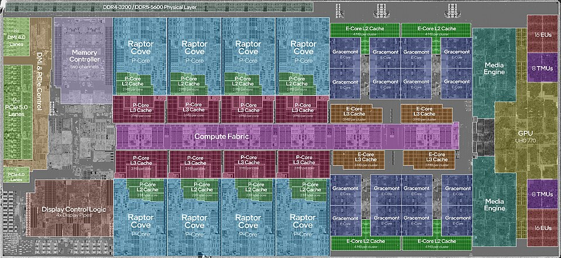
{kind=link}